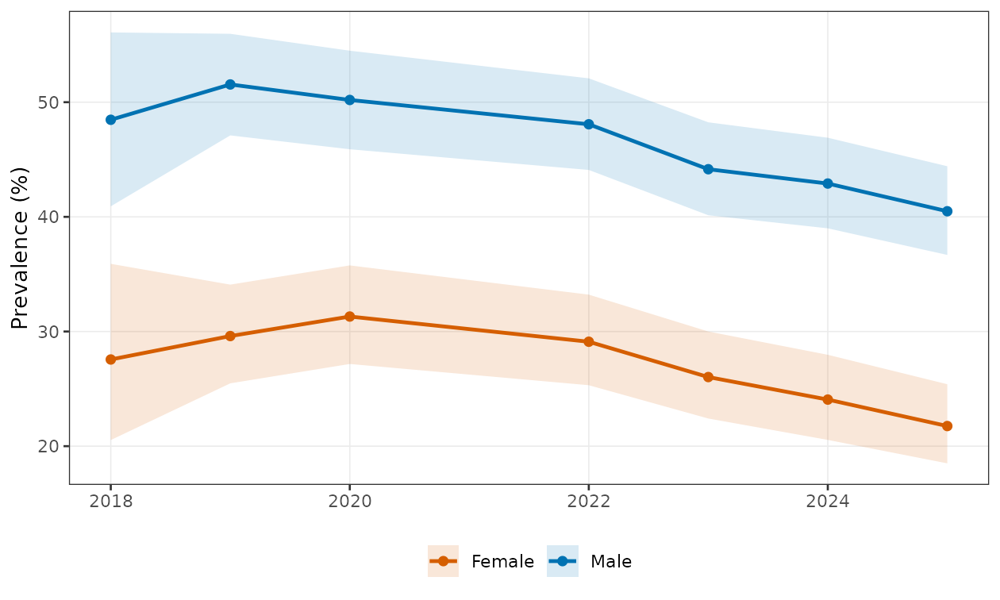
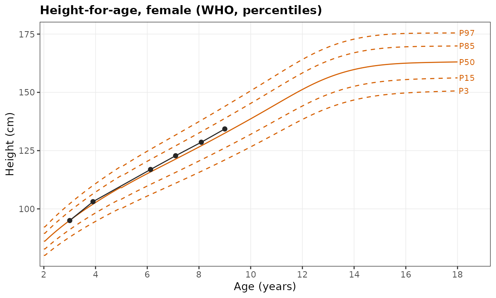
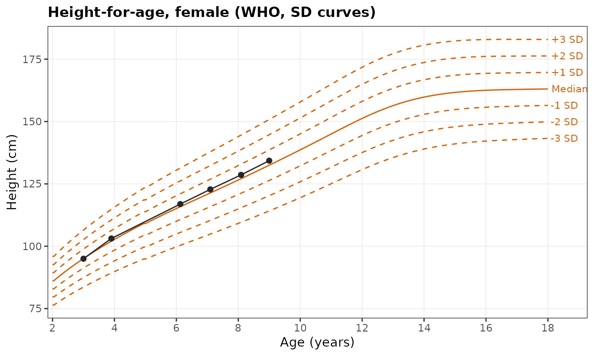
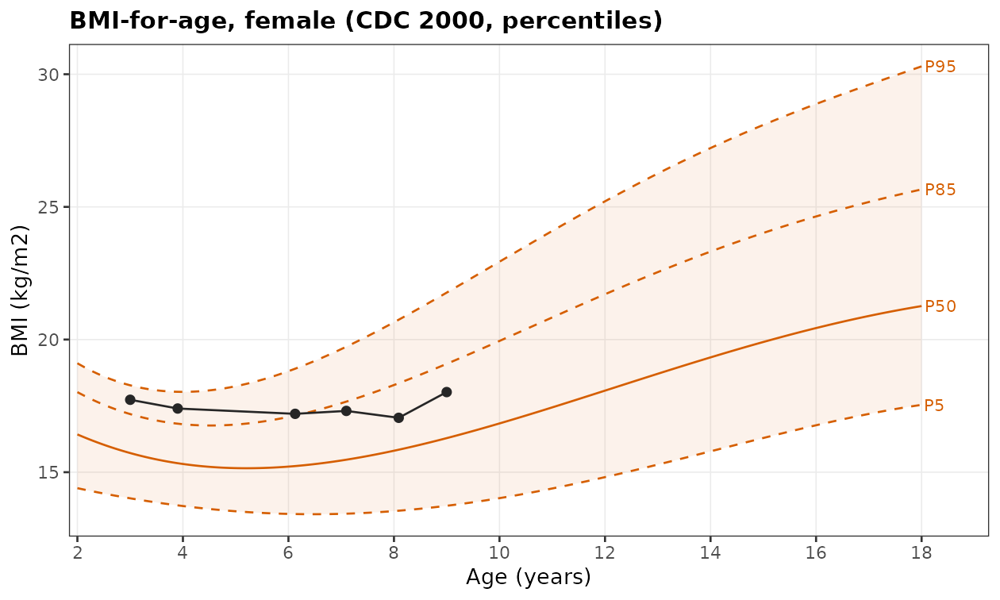
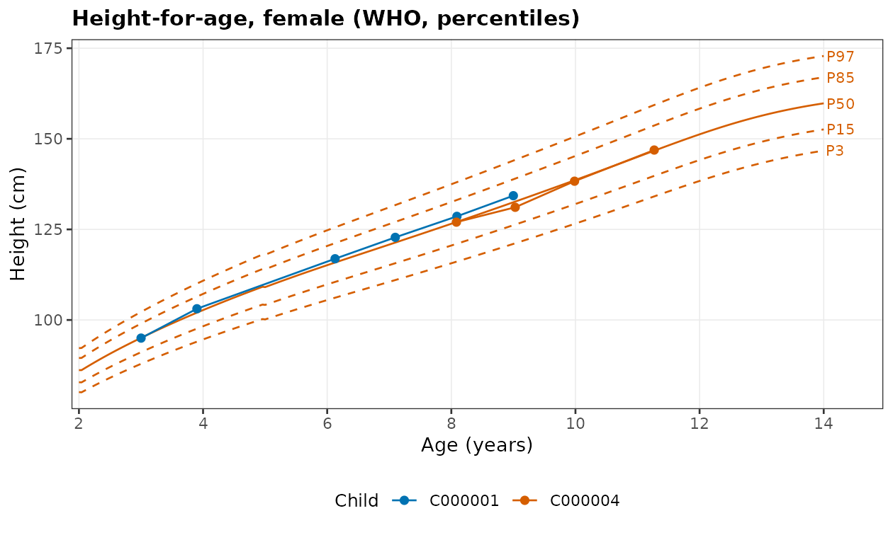
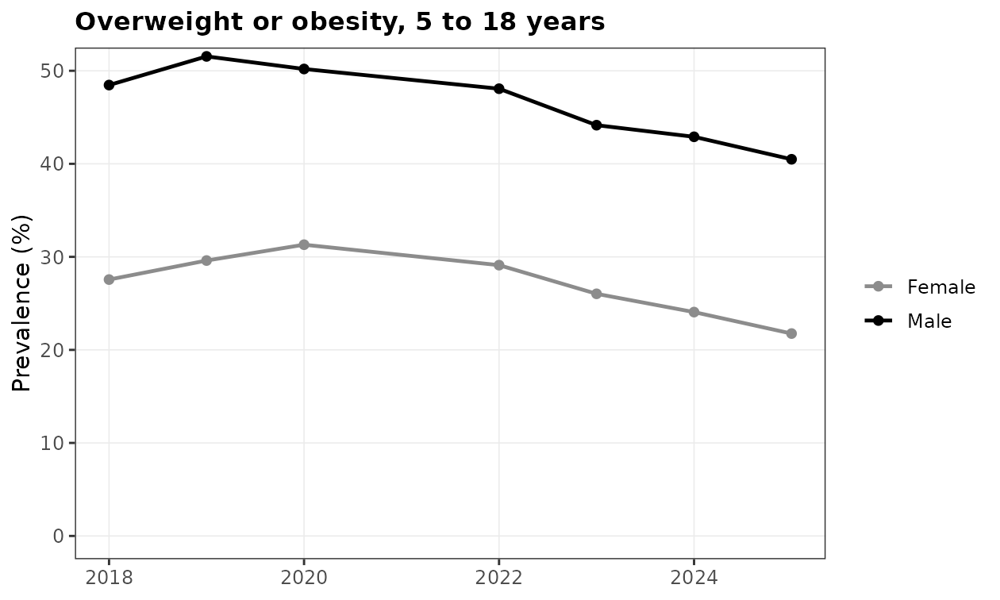
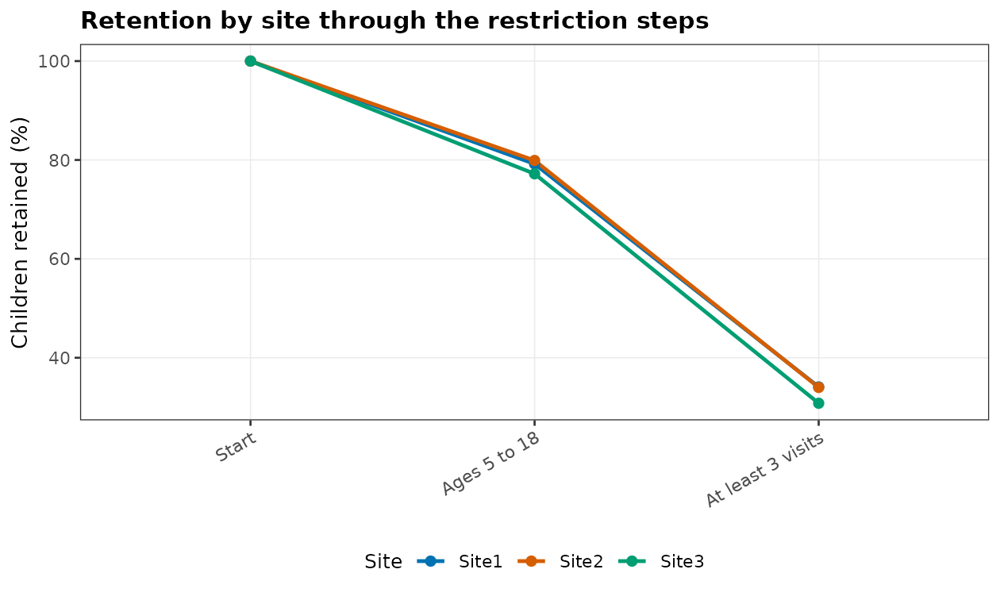

WeGrowHealthR takes longitudinal child growth data from raw visits to publication tables and figures. This vignette walks through the first steps that almost every analysis shares: describing your data to the package, cleaning a raw export, computing z-scores and percentiles against the WHO or CDC references, classifying nutritional status, estimating prevalence, drawing growth charts, and tuning any plot. Each section explains the code, the main options, what the output means and where to go next.
All examples use growdat, a simulated school health
cohort of about 3,300 children aged 18 months to 18 years with yearly
visits. It resembles a large urban school health cohort, so the numbers
look like those of the published studies, but they are not findings.
library(WeGrowHealthR)
head(growdat)
#> pid sex site dob yearvisit examdate age height weight
#> 1 C000001 Female Site2 2016-10-24 2019 2019-10-25 3.001 95.0 16.0
#> 2 C000001 Female Site2 2016-10-24 2020 2020-09-18 3.901 103.1 18.5
#> 3 C000001 Female Site2 2016-10-24 2022 2022-12-10 6.127 116.9 23.5
#> 4 C000001 Female Site2 2016-10-24 2023 2023-11-29 7.097 122.8 26.1
#> 5 C000001 Female Site2 2016-10-24 2024 2024-11-26 8.090 128.6 28.2
#> 6 C000001 Female Site2 2016-10-24 2025 2025-10-24 8.999 134.3 32.5
#> bmi haz waz baz
#> 1 17.73 -0.015 1.091 1.588
#> 2 17.40 0.252 1.091 1.387
#> 3 17.20 0.202 0.902 1.079
#> 4 17.31 0.262 0.885 0.993
#> 5 17.05 0.260 0.650 0.681
#> 6 18.02 0.296 0.812 0.880Each row is one visit. pid identifies the child,
site the school site, dob and
examdate are the date of birth and the date of measurement,
and age is the decimal age in years.
1. Describe your data once with wgh_data()
wgh_data() is the data contract. You tell it which of
your columns holds each role (child identifier, sex, age or dates,
height, weight, site, year) and it returns a wgh_data
object with standard column names that every function in the package
understands. You do this once per data set.
Ages from dates
If you have the date of birth and the date of measurement, give them
as dob and date and leave out
age. Age at measurement is computed as the number of days
between the two dates divided by 365.25, which is the convention of the
WHO software.
gd <- wgh_data(growdat, id = "pid", sex = "sex", dob = "dob", date = "examdate",
height = "height", weight = "weight", site = "site")
gd
#> <wgh_data>: 8663 visits from 3259 children
#> Ages 1.5 to 18.49 years. Sex: Male 4625, Female 4038
#> Sites: Site1, Site2, Site3
#> Years: 2018 to 2026
#> Mapping: id = pid, sex = sex, dob = dob, date = examdate, height = height,
#> weight = weight, site = site
head(gd$data)
#> # A tibble: 6 × 14
#> id sex age dob date year site height weight bmi
#> <chr> <fct> <dbl> <date> <date> <int> <fct> <dbl> <dbl> <dbl>
#> 1 C000001 Female 3.00 2016-10-24 2019-10-25 2019 Site2 95 16 17.7
#> 2 C000001 Female 3.90 2016-10-24 2020-09-18 2020 Site2 103. 18.5 17.4
#> 3 C000001 Female 6.13 2016-10-24 2022-12-10 2022 Site2 117. 23.5 17.2
#> 4 C000001 Female 7.10 2016-10-24 2023-11-29 2023 Site2 123. 26.1 17.3
#> 5 C000001 Female 8.09 2016-10-24 2024-11-26 2024 Site2 129. 28.2 17.1
#> 6 C000001 Female 9.00 2016-10-24 2025-10-24 2025 Site2 134. 32.5 18.0
#> # ℹ 4 more variables: yearvisit <int>, haz <dbl>, waz <dbl>, baz <dbl>Column names can be given as strings ("pid") or bare
names (pid). The printed summary shows the number of
children and visits, the age range and the column mapping.
year was filled from the date of measurement because no
year column was mapped, and BMI was computed from height and weight.
Dates stored as text are read with date_format. Here is
a small data set in which dates are written day/month/year, a common
format in clinic records:
clinic <- data.frame(
child = c("A", "A", "B"), gender = c("F", "F", "M"),
birth = c("03/02/2015", "03/02/2015", "21/11/2012"),
visit = c("10/09/2021", "12/09/2022", "15/09/2021"),
ht = c(121.5, 127.0, 134.2), wt = c(23.1, 26.4, 31.0))
wgh_data(clinic, id = "child", sex = "gender", dob = "birth", date = "visit",
height = "ht", weight = "wt", date_format = "%d/%m/%Y")$data
#> # A tibble: 3 × 9
#> id sex age dob date year height weight bmi
#> <chr> <fct> <dbl> <date> <date> <int> <dbl> <dbl> <dbl>
#> 1 A Female 6.60 2015-02-03 2021-09-10 2021 122. 23.1 15.6
#> 2 A Female 7.61 2015-02-03 2022-09-12 2022 127 26.4 16.4
#> 3 B Male 8.82 2012-11-21 2021-09-15 2021 134. 31 17.2Sex codes such as "F", "M", 1
and 2, "girl" and "boy" are
recognised and stored as "Female" and
"Male".
Ages recorded directly
When only age is available, map it with age. The
age_unit option takes "years" (default),
"months" or "days". When you give both an age
column and dates, age_from = "auto" (default) keeps the
recorded ages, fills any missing age from the dates, and warns when a
recorded age and the date-based age differ by more than 0.1 years. That
warning is a useful data quality check. Use
age_from = "dates" to always compute age from the
dates.
gd2 <- wgh_data(growdat, id = "pid", sex = "sex", age = "age", height = "height",
weight = "weight", site = "site", year = "yearvisit")
wgh_map(gd2)
#> # A tibble: 7 × 2
#> role column
#> <chr> <chr>
#> 1 id pid
#> 2 age age
#> 3 sex sex
#> 4 height height
#> 5 weight weight
#> 6 site site
#> 7 year yearvisitwgh_map() shows which original column holds each
role.
Next steps. Pass gd (or
gd$data) to any function. Most functions also accept a
plain data frame that already uses the book column names
(pid, site, yearvisit), so
growdat itself works everywhere.
2. Clean a raw export with wgh_clean()
growdat_raw is the same cohort as a messy export from a
school health information system, with heights entered in metres,
weights in grams, height and weight swapped, duplicated visits and
implausible values.
clean <- wgh_clean(growdat_raw)
attr(clean, "cleaning_log")
#> # A tibble: 11 × 2
#> step rows_affected
#> <chr> <int>
#> 1 Trimmed spaces in identifiers 23
#> 2 Recoded sex values 32
#> 3 Resolved conflicting sex within child 0
#> 4 Corrected examination year from the school year 22
#> 5 Recomputed age from dates 0
#> 6 Height in metres converted to cm 29
#> 7 Weight in grams converted to kg 18
#> 8 Swapped height and weight restored 25
#> 9 Duplicate visits removed 23
#> 10 Height inconsistent with the child's own series (flagged) 90
#> 11 Rows flagged as implausible 104wgh_clean() repairs only errors whose type is
unambiguous and logs every change. Everything else is flagged in the
implausible column rather than altered, so you decide what
to do with it. The options repair_units,
drop_duplicates and z_limit switch individual
steps on or off.
Next steps. Inspect the flagged rows with
clean[clean$implausible, ], then use the cleaned data in
the steps below.
3. Z-scores and percentiles
wgh_add_zscores() adds height-for-age
(haz), weight-for-age (waz) and BMI-for-age
(baz) z-scores. With reference = "who"
(default) it uses the WHO 2006 Child Growth Standards below 60 months
and the WHO 2007 Growth Reference from 60 months, with the WHO
restricted tails for weight and BMI. The values agree with the
anthro and anthroplus packages. With
reference = "cdc" it uses the CDC 2000 growth charts (2 to
20 years). percentiles = TRUE adds the matching
percentiles.
z_who <- wgh_add_zscores(growdat[1:5, c("pid", "sex", "age", "height", "weight", "bmi")],
percentiles = TRUE)
z_who[, c("pid", "age", "haz", "haz_pct", "baz", "baz_pct")]
#> # A tibble: 5 × 6
#> pid age haz haz_pct baz baz_pct
#> <chr> <dbl> <dbl> <dbl> <dbl> <dbl>
#> 1 C000001 3.00 -0.0157 49.4 1.59 94.4
#> 2 C000001 3.90 0.253 60.0 1.38 91.7
#> 3 C000001 6.13 0.203 58.0 1.08 86.0
#> 4 C000001 7.10 0.261 60.3 0.993 84.0
#> 5 C000001 8.09 0.261 60.3 0.681 75.2
z_cdc <- wgh_add_zscores(growdat[1:5, c("pid", "sex", "age", "height", "weight", "bmi")],
reference = "cdc")
z_cdc[, c("pid", "age", "haz", "baz")]
#> # A tibble: 5 × 4
#> pid age haz baz
#> <chr> <dbl> <dbl> <dbl>
#> 1 C000001 3.00 0.270 1.35
#> 2 C000001 3.90 0.693 1.35
#> 3 C000001 6.13 0.248 1.06
#> 4 C000001 7.10 0.122 0.904
#> 5 C000001 8.09 0.0850 0.566The two references differ, most for BMI, because they were built from different populations and periods. Weight-for-age is not defined by WHO after 10 years or by CDC before 2 years, so those cells are missing.
For single values, wgh_zscore() takes the measurement,
age, sex and indicator. wgh_compare_references() shows
several versions side by side, which helps when you need to explain why
two software packages disagree:
wgh_zscore(130, age = 9, sex = "Female", indicator = "hfa")
#> [1] -0.4082059
wgh_zscore(130, age = 9, sex = "Female", indicator = "hfa", reference = "cdc")
#> [1] -0.4738933
wgh_compare_references(c(22, 28), age = c(10, 15), sex = "Male", indicator = "bfa")
#> # A tibble: 2 × 8
#> age sex value who who_plain_lms symmetric cdc anthroplus
#> <dbl> <chr> <dbl> <dbl> <dbl> <dbl> <dbl> <dbl>
#> 1 10 Male 22 2.16 2.16 2.73 1.63 2.16
#> 2 15 Male 28 2.18 2.18 2.83 1.81 2.18The columns are the WHO value with restricted tails
(who), the plain LMS value without them
(who_plain_lms), a symmetric approximation, the CDC value,
and the anthroplus value when that package is
installed.
You can also give your own reference as a data frame with columns
sex, age (years), L,
M and S (and optionally
indicator), for example a national growth reference.
4. Nutritional status with wgh_classify()
wgh_classify() adds z-scores and status categories. The
WHO system (default) uses BMI-for-age cut-offs of -3 and -2 SD for
severe thinness and thinness, +1 and +2 SD for overweight and obesity
from 5 years (+2 and +3 SD below 5 years), and HAZ below -2 (and -3) for
stunting (and severe stunting). The CDC system uses the 5th, 85th and
95th BMI percentiles.
cl <- wgh_classify(growdat)
table(cl$bmi_status[cl$age >= 5], cl$sex[cl$age >= 5])
#>
#> Male Female
#> Severe thinness 18 11
#> Thinness 71 59
#> Normal 1825 2178
#> Overweight 872 622
#> Obesity 762 200
cl_cdc <- wgh_classify(growdat[growdat$age >= 2, ], system = "cdc")
table(cl_cdc$bmi_status, cl_cdc$sex)
#>
#> Male Female
#> Underweight 397 300
#> Healthy weight 2478 2811
#> Overweight 765 540
#> Obesity 826 240Besides the categories, the output has indicator columns such as
overweight_obesity, obesity,
stunting and thinness (TRUE or FALSE), ready
for prevalence estimation.
5. Prevalence and trends
wgh_prevalence() estimates the prevalence of an
indicator, or the share of each category of a status variable, with
confidence intervals. by sets the groups. For a categorical
status, method = "sison_glaz" gives simultaneous intervals
for all categories together, as in Ho et al. (2026, Sci Rep
16:7515).
older <- cl[cl$age >= 5, ]
wgh_prevalence(older, "bmi_status", by = "sex", method = "sison_glaz")
#> # A tibble: 10 × 7
#> sex category n cases prevalence lower upper
#> <chr> <chr> <int> <int> <dbl> <dbl> <dbl>
#> 1 Male Severe thinness 3548 18 0.507 0 2.26
#> 2 Male Thinness 3548 71 2.00 0.254 3.76
#> 3 Male Normal 3548 1825 51.4 49.7 53.2
#> 4 Male Overweight 3548 872 24.6 22.8 26.3
#> 5 Male Obesity 3548 762 21.5 19.7 23.2
#> 6 Female Severe thinness 3070 11 0.358 0 1.98
#> 7 Female Thinness 3070 59 1.92 0.326 3.54
#> 8 Female Normal 3070 2178 70.9 69.3 72.6
#> 9 Female Overweight 3070 622 20.3 18.7 21.9
#> 10 Female Obesity 3070 200 6.51 4.92 8.14
pv <- wgh_prevalence(older, "overweight_obesity", by = c("sex", "yearvisit"))
head(pv)
#> # A tibble: 6 × 7
#> sex yearvisit n cases prevalence lower upper
#> <chr> <int> <int> <int> <dbl> <dbl> <dbl>
#> 1 Male 2018 163 79 48.5 40.9 56.1
#> 2 Female 2018 127 35 27.6 20.5 35.9
#> 3 Male 2019 485 250 51.5 47.1 56.0
#> 4 Female 2019 429 127 29.6 25.5 34.1
#> 5 Male 2020 516 259 50.2 45.9 54.5
#> 6 Female 2020 444 139 31.3 27.2 35.8Each row gives the number of visits (n), the number with
the condition (cases), the prevalence in percent and its
interval. A trend over calendar time is tested with the Cochran-Armitage
test:
wgh_trend_test(older, "overweight_obesity", "yearvisit", by = "sex")
#> # A tibble: 2 × 7
#> sex test statistic df p_value first last
#> <chr> <chr> <dbl> <dbl> <dbl> <dbl> <dbl>
#> 1 Male Cochran-Armitage 19.3 1 0.0000110 48.5 40.5
#> 2 Female Cochran-Armitage 12.8 1 0.000348 27.6 21.8A small p-value says the prevalence changes steadily across years.
Repeated visits of the same child are not independent, so for formal
inference on trends use the GEE models in wgh_gee_trend(),
which the trend flows apply (see
vignette("trends-malnutrition")).

6. Growth charts
wgh_plot_growth_chart() draws a child’s measurements
over reference curves. Two choices matter:
-
lines = "percentile"(default) draws percentile curves, set withcentiles(default 3, 15, 50, 85 and 97).lines = "sd"draws z-score curves, set withsd_lines(default -3 to +3). -
reference = "who"(default),"cdc"or your own LMS table.
indicator chooses height ("hfa"), weight
("wfa") or BMI ("bfa"), and
age_range the ages shown.
girl <- growdat$pid[growdat$sex == "Female"][1]
wgh_plot_growth_chart(growdat, ids = girl)
wgh_plot_growth_chart(growdat, ids = girl, lines = "sd")
wgh_plot_growth_chart(growdat, ids = girl, indicator = "bfa", reference = "cdc",
centiles = c(5, 50, 85, 95), band = TRUE)
The CDC BMI chart marks the 85th and 95th percentiles, the CDC
cut-offs for overweight and obesity. Several children can be shown
together, each in its own colour, with
child_colour = NULL:
three <- unique(growdat$pid[growdat$sex == "Female"])[1:3]
wgh_plot_growth_chart(growdat, ids = three, child_colour = NULL, age_range = c(2, 14))
Next steps. To judge whether a child’s growth
follows the expected course given the child’s own history, rather than
the population, use the conditional references in
vignette("growth-distributions").
7. Tuning any plot
Every plot function and plot() method in the package
accepts the same display options through .... They are
documented in ?wgh_plot_options: titles and axis labels,
base_size, legend position, a
palette, point_size, line_width,
alpha, show_ci, facets and axis limits.
wgh_plot_prevalence(pv, title = "Overweight or obesity, 5 to 18 years",
palette = c(Male = "black", Female = "grey55"),
show_ci = FALSE, y_limits = c(0, 50), base_size = 12, legend = "right")
#> Warning: No shared levels found between `names(values)` of the manual scale and the
#> data's fill values.
To use the same settings for several plots, build them once:
opts <- wgh_plot_options(base_size = 9, legend = "none")
do.call(wgh_plot_prevalence, c(list(pv), opts))Plots are ggplot objects, so you can also add any ggplot2 layer,
scale or theme, and save them with wgh_save_figure() (TIFF
and PDF at 600 dpi by default, the format most journals ask for).
8. Tracking the analytic sample
Analyses usually restrict the data step by step.
wgh_sample_flow() records how many children and visits
remain after each step and, when there is a site column,
the share retained at each site. A step that removes one site much more
than the others is flagged, because it can bias comparisons.
fl <- wgh_sample_flow(growdat,
"Ages 5 to 18" = ~ age >= 5 & age <= 18.5,
"At least 3 visits" = wgh_min_visits(3))
fl
#> <wgh_sample_flow>: 2 restriction steps
#> # A tibble: 3 × 5
#> step children visits children_lost pct_children_retained
#> <chr> <int> <int> <int> <dbl>
#> 1 Start 3259 8663 NA 100
#> 2 Ages 5 to 18 2580 6618 679 79.2
#> 3 At least 3 visits 1099 4570 1481 33.7
#> Children retained by site (%):
#> # A tibble: 3 × 4
#> step `% Site1` `% Site2` `% Site3`
#> <chr> <dbl> <dbl> <dbl>
#> 1 Start 100 100 100
#> 2 Ages 5 to 18 79.2 79.9 77.2
#> 3 At least 3 visits 34.1 34 30.8
plot(fl)
The restricted data are in fl$data.
9. Run modes, reports and export
Heavy functions read their defaults (bootstrap replicates, folds,
quantile grids, subsample sizes) from a run mode.
wgh_config("dev") gives settings that run in seconds for
checking code, "analysis" is the default and
"publication" uses full grids and bootstraps. Any argument
you pass explicitly overrides the mode, and single settings can be
overridden with wgh_config("analysis", B = 1000).
old <- wgh_config("dev")
#> WeGrowHealthR run mode: dev
wgh_opt("B")
#> [1] 10The study workflows (wgh_flow_*()) return a
wgh_report that holds every table, figure and model of one
study, the analytic sample flow and the status of each model (fitted,
failed or skipped, with the reason).
rep <- wgh_flow_malnutrition_trends(growdat, mode = "dev")
rep
#>
#> ── Stunting, thinness, obesity and double burden (Ho et al. 2026, medRxiv 2026.07.26.26358982) ──
#>
#> Tables (6): table1, prevalence_by_year, trend_tests, gee_odds_ratios,
#> double_burden, median_by_site
#> Figures (4): fig_trends, fig_status_bars, fig_dbm_heatmap, fig_or_forest
#> Model status: 4 ok, 0 failed, 0 skipped
#> ok: GEE calendar trend, stunting (warning: Skipping age group(s) 10-14 y, 15-18
#> y with fewer than 10 events. | Skipping age group(s) 5-9 y, 10-14 y with fewer
#> than 10 events.)
#> ok: GEE calendar trend, obesity (warning: Skipping age group(s) <5 y with fewer
#> than 10 events.)
#> Settings: mode = dev; n_children = 3259
rep$tables$prevalence_by_year # a table
plot(rep, "fig_trends", base_size = 13) # a figure, restyled
wgh_export(rep, "malnutrition_results") # Excel workbook, TIFF and PDF figuresWhere to go next
-
vignette("trends-malnutrition"): secular trends, prevalence, the double burden of malnutrition and GEE trend models. -
vignette("trajectories"): how a prepubertal exposure relates to later height trajectories with mixed models. -
vignette("growth-curves"): SITAR growth curves, the pubertal spurt, its timing, intensity and duration. -
vignette("growth-distributions"): quantile regression, growth inequality and conditional growth references. -
vignette("phenotypes-states"): growth phenotypes, canalization and multistate models. -
vignette("prediction"): predicting late-adolescent height and explaining predictions. -
vignette("simulated-data")andvignette("reproducing-the-program"), which runs all 14 study flows. -
vignette("parallel-computing"): running bootstraps, quantile grids and cross-validation on several cores with identical results.
wgh_references() lists the studies whose analyses the
package reproduces.